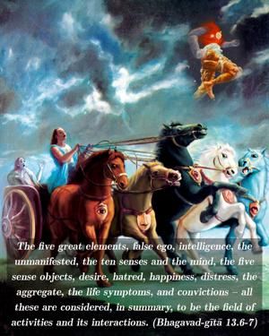
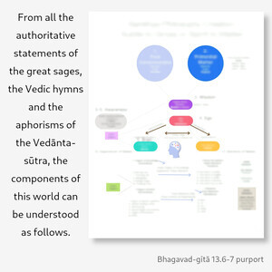
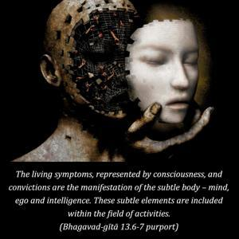

The five great elements, false ego, intelligence, the unmanifested, the ten senses and the mind, the five sense objects, desire, hatred, happiness, distress, the aggregate, the life symptoms, and convictions – all these are considered, in summary, to be the field of activities and its interactions.



From all the authoritative statements of the great sages, the Vedic hymns and the aphorisms of the Vedānta-sūtra, the components of this world can be understood as follows. First there are earth, water, fire, air and ether. These are the five great elements (mahā-bhūta). Then there are false ego, intelligence and the unmanifested stage of the three modes of nature. Then there are five senses for acquiring knowledge: the eyes, ears, nose, tongue and skin. Then five working senses: voice, legs, hands, anus and genitals. Then, above the senses, there is the mind, which is within and which can be called the sense within. Therefore, including the mind, there are eleven senses altogether. Then there are the five objects of the senses: smell, taste, form, touch and sound. Now the aggregate of these twenty-four elements is called the field of activity. If one makes an analytical study of these twenty-four subjects, then he can very well understand the field of activity. Then there are desire, hatred, happiness and distress, which are interactions, representations of the five great elements in the gross body. The living symptoms, represented by consciousness, and convictions are the manifestation of the subtle body – mind, ego and intelligence. These subtle elements are included within the field of activities.
The five great elements are a gross representation of the false ego, which in turn represents the primal stage of false ego technically called the materialistic conception, or tāmasa-buddhi, intelligence in ignorance. This, further, represents the unmanifested stage of the three modes of material nature. The unmanifested modes of material nature are called pradhāna.
One who desires to know the twenty-four elements in detail along with their interactions should study the philosophy in more detail. In Bhagavad-gītā, a summary only is given.
The body is the representation of all these factors, and there are changes of the body, which are six in number: the body is born, it grows, it stays, it produces by-products, then it begins to decay, and at the last stage it vanishes. Therefore the field is a nonpermanent material thing. However, the kṣetra-jña, the knower of the field, its proprietor, is different.